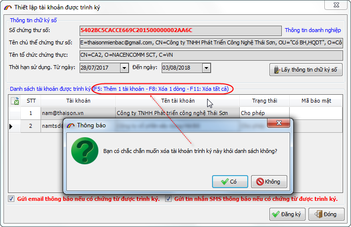

GIỚI THIỆU HỆ THỐNG TRÌNH KÝ ECUSSIGN_PRO
Từ 01/08/2022-31/08/2022 Thái sơn sẽ thực hiện chuyển đổi các tài khoản trình ký thông thường lên hệ thống trình ký Pro (hoàn toàn miễn phí), nhằm đảm bảo nâng cao chất lượng dịch vụ.
Hệ thống trình ký ECUSSign Pro là phiên bản cho phép doanh nghiệp trình ký trên hệ thống DC (Data Center) chuyên nghiệp, có đường truyền đảm bảo tốc độ cao, nhanh chóng thuận tiện, đặc biệt đây là bản hoàn toàn miễn phí, phiên bản này có các tính năng và điểm nổi bật vượt trội như:
- Trình ký và quản lý dữ liệu hiệu quả trên hệ thống Data center chuyên nghiệp.
- Đường truyền đảm bảo tốc độ cao giúp cho việc trình và duyệt ký hầu như tức thì.
- Tích hợp chức năng thông báo khi có chứng từ trình đến cho người duyệt ký biết, thông qua email hoặc tin nhắn SMS trên điện thoại.
- Đây là phiên bản hoàn toàn miễn phí cho cả 2 bên trình ký khi đăng ký tài khoản và bên duyệt ký chứng từ.
Hệ thống trình ký ECUSSignPro được thể hiện qua sơ đồ:

Hệ thống trình ký ECUSSignPro có đường truyền tốc độ cao, giúp cho việc trình và duyệt ký nhanh chóng nhất, đảm bảo quá trình kê khai hồ sơ Hải quan được xuyên suốt:

Hệ thống còn tích hợp thêm chức năng thông báo cho người duyệt ký khi có chứng từ trình đến, thông qua email hoặc tin nhắn SMS để công việc không bị bỏ lỡ hoặc chậm trễ trong việc ký chứng từ:

Nếu trên các phiên bản trình ký trước đây, sau khi thêm mới tài khoản được trình ký vào danh sách bạn không thể xóa đi được, thì ở phiên bản ECUSSignPro bạn có thể thêm mới hoặc xóa tài khoản một cách dễ dàng:

Bản quyền © thuộc về Công ty TNHH Phát triển công nghệ Thái Sơn